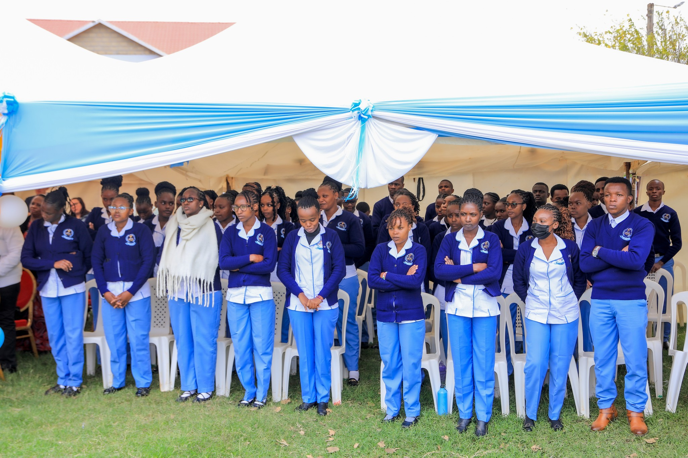
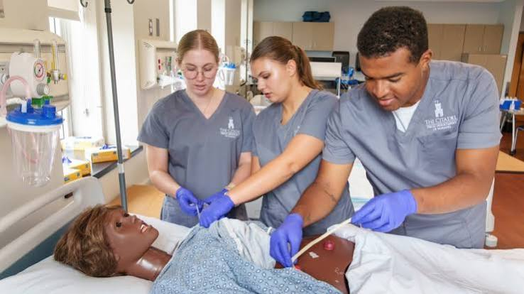
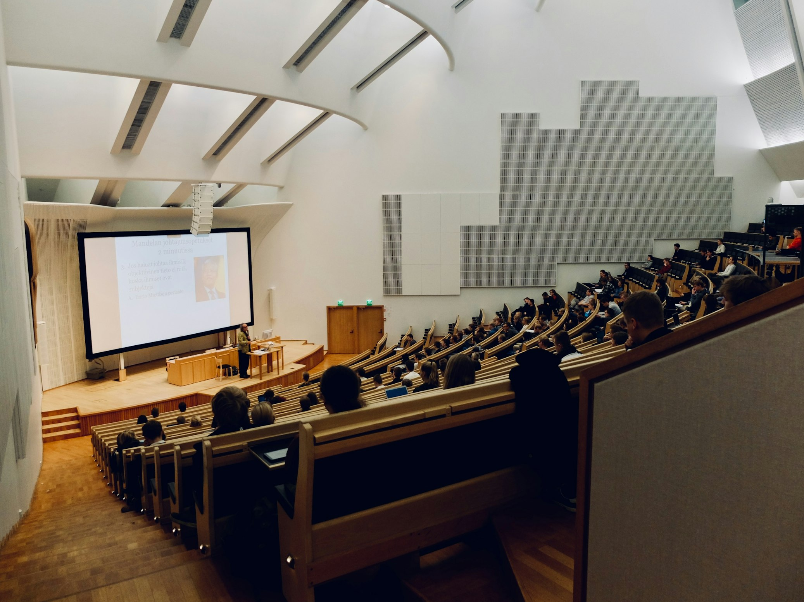
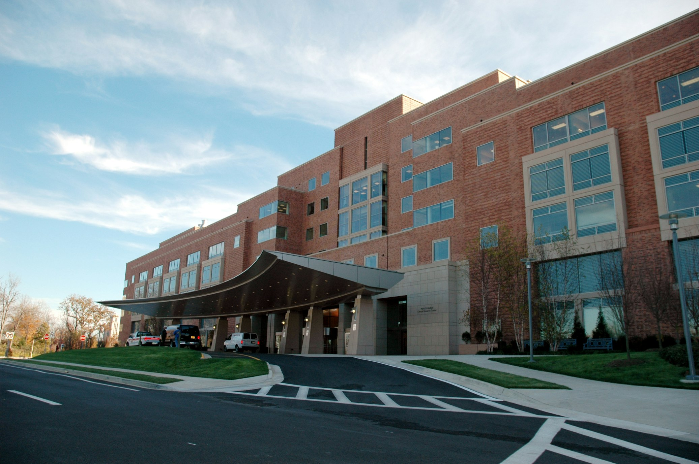
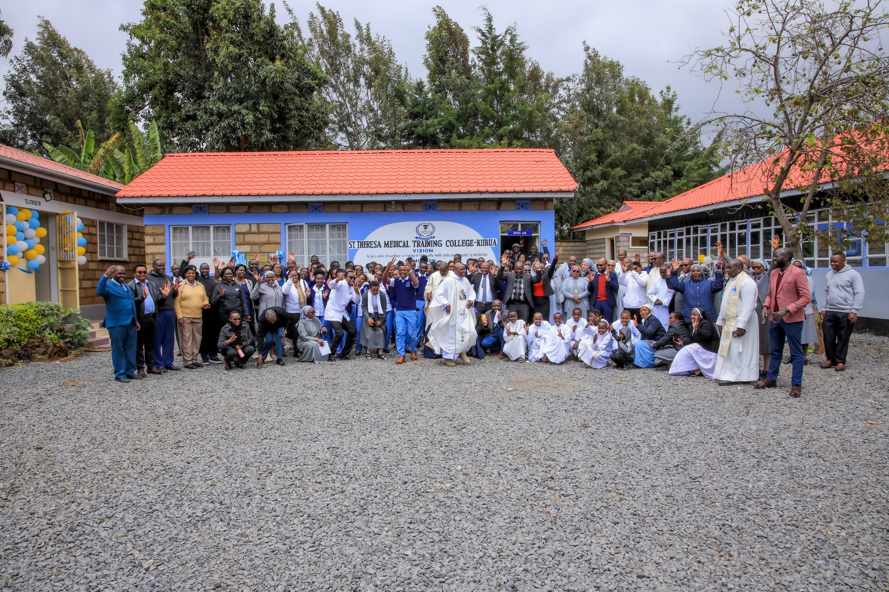
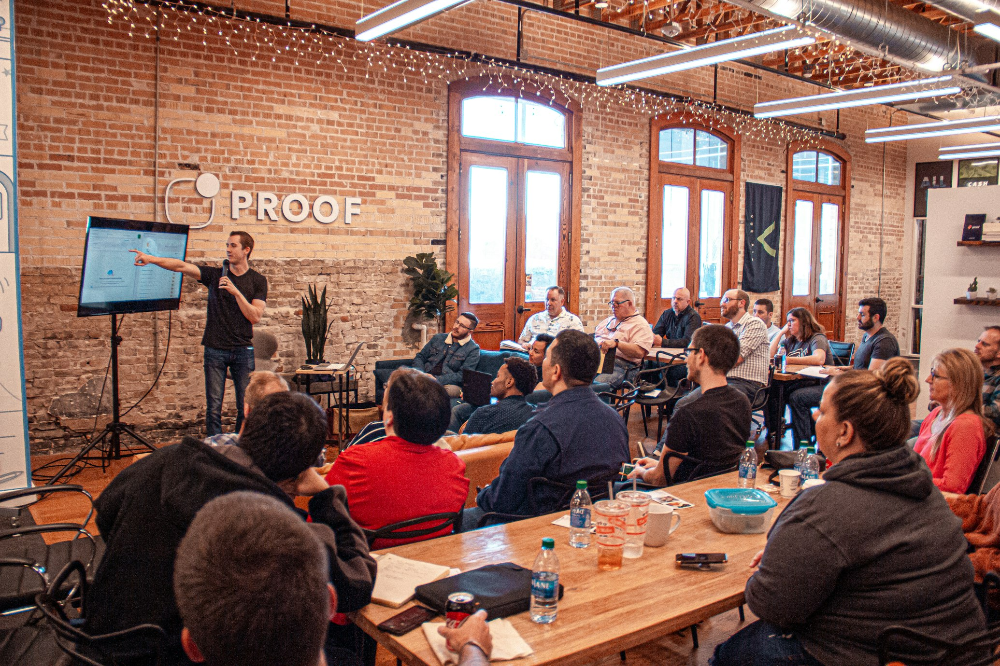

Diploma · 3½ Years
Community Health Nursing (KRCHN)
Master the art of healing and community wellness through intensive clinical rotations at our Level 5 hospital.
We provide a unique training environment where faith meets science — and classrooms open directly into a working Level 5 teaching hospital.
As a constituent college of St Theresa Mission Hospital, students receive daily clinical exposure in a fully operational Level 5 facility — not simulations alone.
Our KENAS ISO 15189:2012 certified laboratory is among only a handful in Kenya meeting international standards — a globally recognised training edge.
Our diploma is registered with KNEC and the TVET Authority, ensuring full national recognition and career portability across Kenya and beyond.
Founded by the Little Sisters of St. Therese, we shape professionals with strong ethics, integrity, compassion, and a genuine desire to serve.
One focused pathway — preparing you for a meaningful, lifelong career as a Kenya Registered Community Health Nurse.

Master the art of healing and community wellness through intensive clinical rotations at our Level 5 hospital.

From Year 1, students rotate through real wards — maternity, paediatrics, surgery, ICU — under specialist mentorship.
80 spaces available. Applications reviewed in order of submission.
Before you even step through our gates, let us take you around. From the wards where students train daily, to the library where ideas come alive — this is life at STTMTC-K.

The moment you join STTMTC-K, you become part of a fully operational hospital. You won't just read about patient care — you'll deliver it, from Year 1, under experienced clinicians.
This is the defining advantage of STTMTC-K: your classroom and your clinical floor are the same building.
Before entering real wards, students master IV cannulation, wound dressing, catheterisation, and resuscitation on high-fidelity mannequins. Make your mistakes safely here, so you never make them with a patient.

Over 2,000 medical titles, HINARI digital journal access, and quiet study rooms open from early morning to evening. This is where exam preparation meets deep clinical understanding.

One of Kenya's only hospital labs with full international accreditation. Students run real diagnostic tests — haematology, microbiology, biochemistry — on live specimens to global standards.

Spacious, naturally lit rooms with projectors and modern teaching aids. The cool highland air of Kiirua — over 1,500m above sea level — creates ideal, distraction-free study conditions year-round.

Safe, affordable, and secure — inside the walled Mission Hospital compound. Separate male and female facilities with 24-hour security, study desks, and pastoral care from the Little Sisters of St. Therese.

Principal's office, Registrar, Finance, and Student Affairs are all here — open-door and student-friendly. Need a transcript, a letter, or guidance? Walk in. We're always available.

Operated under St Theresa Mission Hospital, our students don't just learn in a classroom. They practise daily in a Level 5 facility, under the mentorship of experienced medical specialists.
Students gain structured, supervised exposure to real clinical environments — building safe practice, professional conduct, and technical competence grounded in compassion and faith.
STTMTC-K is led by an experienced team of clinical educators, administrators, and healthcare professionals — committed to training the next generation with skill, faith, and compassion.
Institutional Management
CEO — Hospital & College Oversight
Leads the strategic vision of St Theresa Mission Hospital and the Training College under the Little Sisters of St. Therese.
Principal, STTMTC-K
Directs academic programmes and represents STTMTC-K in regulatory engagements with TVETA and the Nursing Council of Kenya.
Registrar
Manages student admissions, academic records, and compliance with KNEC and TVET-CDACC examining bodies.
Academic Faculty
Senior Clinical Instructor
Leads nursing education and supervises clinical placements within St Theresa Mission Hospital.
Nursing Tutor
Academic lead for Nursing and Humanities, guiding students through theory and professional practice.
Chief Lab Technologist
Heads the ISO 15189-accredited Medical Laboratory and oversees all laboratory science training.
ICT & Health Records Tutor
Manages Health Records & IT training and the college's digital infrastructure and EMR systems.
STMH-K Laboratory officially accredited by KENAS to ISO 15189:2012 — an international mark of quality and technical excellence in medical diagnostics.
Applications are now open for the 2026 cohort. 80 spaces available for the Nursing programme. Apply early to secure your place.
Year 1 students commence a full week of hands-on practical training in the main laboratory and clinical simulation lab under senior faculty supervision.
Join a 58-year legacy of excellence. 80 spaces available — deadline March 31, 2026.